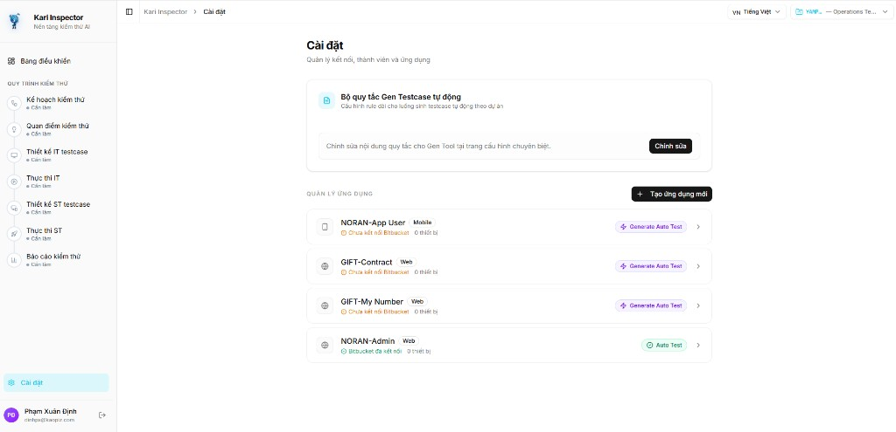
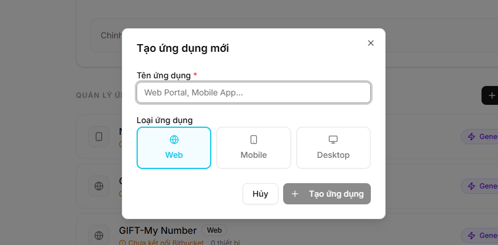
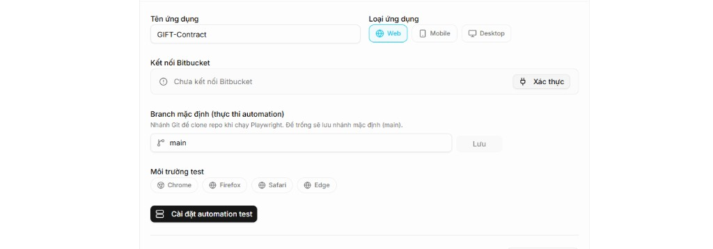
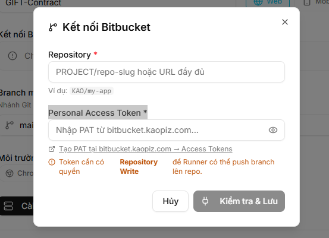
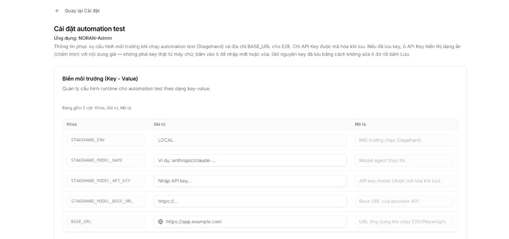
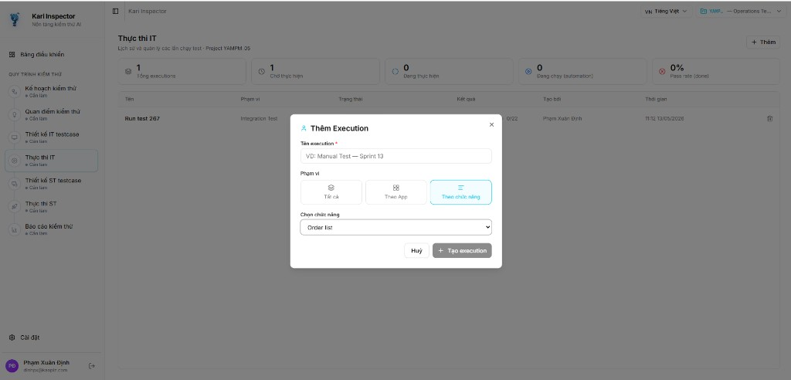
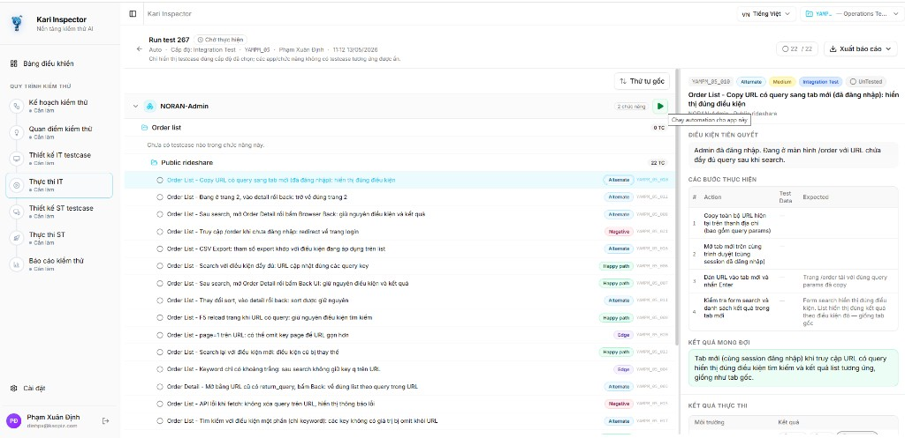

Playwright
Test Guide từ A–Z
Hướng dẫn đầy đủ từ cấu hình Kari Inspector, cài đặt môi trường, sửa test bằng AI, đến chiến lược chọn Locator — dành cho người không cần biết code.
KI01 · Kari Inspector
Đăng ký ứng dụng, kết nối Bitbucket, tạo Execution và gen code automation từ testcase manual.
PW01 · Cài đặt môi trường
Cài Node.js, Cursor IDE, chạy npm install và cấu hình file .env để chạy test trên máy.
PW02 · Sửa test bằng AI
Dùng Cursor AI để phát hiện và sửa các test bị lỗi — không cần biết code, chỉ cần mô tả lỗi.
PW03 · Record test mới
Ghi lại thao tác trên browser bằng Codegen, dùng AI format thành test chuẩn project.
PW04 · Debug UI Mode
Xem lại từng bước test như video, xác định bước lỗi qua action log và snapshot browser.
PW05 · Locator Strategy
Kim tự tháp 9 cấp ưu tiên — từ getByRole đến XPath — để implement testcase bền vững.
🗺️ Sơ đồ Workflow tổng quan
Toàn bộ quy trình từ cấu hình đến regression test — mỗi ô tương ứng một phần trong tài liệu.
Lần đầu: Đọc từ KI01 → PW01 → PW02 → … theo thứ tự. Khi gặp lỗi: Vào thẳng PW02 (sửa AI) hoặc PW04 (debug UI). Regression: Quay lại KI01 mục Thực thi test.
⚙️ Cấu hình ứng dụng trên Kari Inspector
Hướng dẫn toàn bộ quy trình từ đăng ký ứng dụng, kết nối Bitbucket, cấu hình biến môi trường, tạo Execution để gen code automation, đến clone code về local và implement.
Điều kiện tiên quyết
| Yêu cầu | Chi tiết |
|---|---|
| Tài khoản Kari Inspector | Đã được cấp quyền truy cập vào tổ chức |
| Repository Bitbucket | Repo chứa project automation test đã được tạo sẵn |
| Personal Access Token (PAT) | Token có quyền Repository Write — tạo tại bitbucket.kaopiz.com → Access Tokens |
| API Key AI (nếu cần) | Được cung cấp bởi team, dùng cho Stagehand |
Không chia sẻ Personal Access Token hay API Key với người khác. Không commit các thông tin này lên repository.
1.1 Truy cập trang Cài đặt & Tạo ứng dụng
Mở trình duyệt và truy cập địa chỉ sau, đăng nhập nếu được yêu cầu:

Trong khu vực Quản lý ứng dụng, nhấn nút + Tạo ứng dụng mới ở góc trên bên phải.
Dialog Tạo ứng dụng mới xuất hiện. Điền các thông tin sau:

| Trường | Cách điền | Ví dụ |
|---|---|---|
| Tên ứng dụng | Nhập tên mô tả ứng dụng cần test | GIFT-Contract, NORAN-App User |
| Loại ứng dụng | Chọn loại phù hợp | Web / Mobile / Desktop |
Ứng dụng mới xuất hiện trong danh sách với trạng thái "Chưa kết nối Bitbucket".
1.2 Kết nối Bitbucket
Trong danh sách ứng dụng, click vào tên ứng dụng vừa tạo. Nhấn nút Xác thực tại mục Kết nối Bitbucket.

Dialog Kết nối Bitbucket xuất hiện. Điền đầy đủ hai trường:

| Trường | Cách điền | Ví dụ |
|---|---|---|
| Repository | Định dạng PROJECT/repo-slug hoặc URL đầy đủ | KAO/my-app |
| Personal Access Token | Dán PAT đã tạo trên bitbucket.kaopiz.com | ATBBxxxxxxxx |
✅ Thành công → trạng thái chuyển sang "Bitbucket đã kết nối" — màu xanh lá.
❌ Thất bại → kiểm tra lại URL repo và PAT, đảm bảo Token chưa hết hạn.
PAT phải có quyền Repository Write để Runner có thể push branch lên repo. Tạo tại bitbucket.kaopiz.com → Access Tokens.
1.3 Cấu hình Biến môi trường
Trong trang chi tiết ứng dụng, nhấn nút Cài đặt automation test.

| Khóa (Key) | Ý nghĩa | Ví dụ giá trị |
|---|---|---|
STAGEHAND_ENV | Môi trường chạy Stagehand | LOCAL |
STAGEHAND_MODEL_NAME | Tên model AI | anthropic/claude-3-5-sonnet |
STAGEHAND_MODEL_API_KEY | API key của model AI | sk-ant-... (do team cung cấp) |
STAGEHAND_MODEL_BASE_URL | Base URL của provider API | https://openrouter.ai/api/v1 |
BASE_URL | URL ứng dụng cần test (E2E) | https://app.example.com |
Nhấn Lưu sau khi điền đầy đủ. API Key sẽ hiển thị dạng ẩn (chấm tròn) sau khi lưu — đây là bình thường.
Xác nhận cấu hình hoàn tất
| Hạng mục | Trạng thái mong đợi |
|---|---|
| Kết nối Bitbucket | ✅ Bitbucket đã kết nối (màu xanh lá) |
| Branch mặc định | Hiển thị tên branch (mặc định: main) |
| Môi trường test | Đã chọn ít nhất một trình duyệt (Chrome / Firefox / Safari / Edge) |
| Biến môi trường | BASE_URL và STAGEHAND_MODEL_API_KEY đã có giá trị |
1.4 Tạo Execution trong Thực thi IT
Sau khi testcase manual đã được gen trên Kari Inspector, thực hiện các bước sau để kích hoạt sinh code automation.
Trên thanh menu trái, click vào Thực thi IT. Màn hình hiển thị lịch sử các lần chạy và thống kê tổng quan.

| Trường | Cách điền | Ví dụ |
|---|---|---|
| Tên execution | Đặt tên mô tả đợt chạy | Manual Test — Sprint 13 |
| Phạm vi | Chọn phạm vi testcase sẽ gen code | Tất cả / Theo App / Theo chức năng |
| Chọn chức năng | Hiện khi chọn Theo chức năng | Order list |
Hệ thống tự động sinh code và push lên Bitbucket — không cần thao tác thêm.
Tất cả — gen toàn bộ project. Theo App — gen cho một ứng dụng cụ thể. Theo chức năng — chỉ gen module được chọn, phù hợp khi test từng sprint.
Quy trình Kari Inspector gen code tự động
| Thành phần được gen | Mô tả |
|---|---|
File .spec.ts | Cấu trúc test case, tên test, bước thực hiện |
| File Page Object (nếu có) | Mô tả các màn hình liên quan |
File data .json | Dữ liệu đầu vào cho test |
1.5 Clone code về local và Implement
Chọn File → Open Folder… → chọn thư mục vừa clone về → nhấn Open.
Copy .env.example → đổi tên thành .env → điền đầy đủ các biến môi trường (xem mục 1.3 và PW01 bên dưới).
Mở các file .spec.ts đã được gen, điền nội dung automation theo testcase đã chỉ định.
Dùng Cursor AI để viết locator và logic automation. Tham khảo PW02 (sửa test) và PW05 (chọn locator) trong tài liệu này.
1.6 Thực thi test tự động trên Kari Inspector
Sau khi đã verify toàn bộ test case trên local thành công và script đã được merge vào branch main, thực hiện các bước sau để chạy regression test trực tiếp trên Kari Inspector.
Điều kiện trước khi thực thi
| Điều kiện | Mô tả |
|---|---|
| Code đã implement đầy đủ | Tất cả test case trong Execution đã được viết code và chạy pass trên local |
Script đã merge vào main | Pull Request đã được review và merge — không còn ở nhánh feature |
| Kari Inspector đã kết nối Bitbucket | Cấu hình ở mục 1.2 đã hoàn tất, trạng thái "Bitbucket đã kết nối" |
Kari Inspector pull code từ branch đã cấu hình (mặc định là main) để chạy test — script còn trên nhánh feature sẽ không được nhận diện.
Trên thanh menu trái của Kari Inspector, click vào Thực thi IT. Trong danh sách, click vào tên Execution đã tạo trước đó (ví dụ: Manual Test — Sprint 13).
Màn hình mở ra hiển thị danh sách các test case automation sẽ được thực thi.
Click nút Run Testcase (hoặc Chạy automation cho app này) để bắt đầu chạy toàn bộ test case trong Execution.

Sau khi nhấn Run, hệ thống tự động:
Khi nào nên dùng tính năng Thực thi test?
Tính năng này đảm bảo logic cũ của hệ thống không bị ảnh hưởng trong quá trình phát triển tính năng mới.
| Tình huống | Mô tả |
|---|---|
| Sau mỗi sprint / release | Chạy toàn bộ regression để xác nhận không có regression bug |
| Trước khi deploy staging / production | Kiểm tra lần cuối trước khi phát hành |
| Khi team dev merge code lớn vào main | Phát hiện sớm các thay đổi vô tình làm gãy chức năng cũ |
| Theo lịch định kỳ (hàng tuần / hàng ngày) | Monitoring liên tục chất lượng hệ thống |
Tạo Execution (mục 1.4) thực hiện một lần để gen code từ testcase manual. Thực thi test (mục này) là việc chạy lại nhiều lần trên code đã hoàn thiện để regression test.
| Triệu chứng | Nguyên nhân | Cách xử lý |
|---|---|---|
| "Kiểm tra & Lưu" báo lỗi | URL repo sai hoặc PAT không hợp lệ | Kiểm tra định dạng PROJECT/repo-slug; tạo lại PAT mới |
| Trạng thái vẫn "Chưa kết nối" | Token thiếu quyền | Tạo Token mới với quyền Repository Write |
| Execution tạo xong nhưng không thấy code | Gen code lỗi hoặc PAT hết hạn | Kiểm tra lại kết nối Bitbucket; xem log trong Thực thi IT |
npm install báo lỗi sau khi clone | Node.js chưa cài hoặc quá cũ | Cài lại Node.js bản LTS từ nodejs.org |
| Run Testcase nhưng test fail hàng loạt | Code chưa được merge vào branch main | Merge PR rồi thử lại |
| Run Testcase báo lỗi kết nối | Kari Inspector mất kết nối Bitbucket | Vào Cài đặt → Xác thực lại Bitbucket (mục 1.2) |
🔧 Hướng dẫn cài đặt & thiết lập môi trường
Thực hiện một lần duy nhất. Sau khi xong, bạn đã sẵn sàng chạy và implement test trên máy.
2.1 Phần mềm cần cài
Node.js (bắt buộc)
Node.js là nền tảng để chạy các lệnh test. Bộ cài đã bao gồm sẵn npm — không cần cài thêm gì.
Truy cập nodejs.org → tải bản LTS (nút màu xanh bên trái).
Mở file vừa tải → bấm Next → Next → Install → Finish.
Nếu hệ thống hỏi xin quyền, nhấn "Allow" hoặc nhập mật khẩu máy.
Cursor IDE (để dùng AI sửa test)
Truy cập cursor.com → tải bản phù hợp (macOS / Windows).
Cài đặt như phần mềm thông thường, đăng nhập bằng tài khoản Google hoặc GitHub.
2.2 Mở project và cài thư viện
Chọn File → Open Folder… (Ctrl+K Ctrl+O Windows, Cmd+K Cmd+O macOS) → chọn thư mục project → nhấn Open.
Mở Terminal tích hợp (Ctrl+`), chạy:
2.3 Cấu hình file .env
File .env chứa thông tin cấu hình riêng: URL ứng dụng, API key AI, v.v.
Trong Cursor, tìm file .env.example → click chuột phải → Copy → Paste vào cùng thư mục → đổi tên thành .env.
| Biến | Ý nghĩa | Ví dụ |
|---|---|---|
BASE_URL | URL ứng dụng cần test | https://practice.automationtesting.in |
STAGEHAND_ENV | Môi trường chạy browser | Giữ nguyên LOCAL |
STAGEHAND_MODEL_NAME | Tên model AI | openai/gpt-4o-mini |
STAGEHAND_MODEL_API_KEY | API key AI | sk-... (do team cung cấp) |
STAGEHAND_MODEL_BASE_URL | URL endpoint model AI | https://openrouter.ai/api/v1 |
Không chia sẻ API key với người khác. Không commit file .env lên git.
2.4 Chạy test lần đầu
| Mục đích | Lệnh |
|---|---|
| Chạy toàn bộ test | npm test |
| Chạy một nhóm cụ thể | npx playwright test tests/xác_thực_và_tài_khoản/ |
| Xem báo cáo HTML | npx playwright show-report |
✅ passed — test chạy thành công · ❌ failed — test bị lỗi (cần sửa) · ⏭ skipped — test chưa có implementation.
| Triệu chứng | Nguyên nhân | Cách xử lý |
|---|---|---|
npm: command not found | Node.js chưa cài hoặc chưa nhận diện | Cài lại Node.js; khởi động lại máy |
Error: BASE_URL is not set | Chưa tạo hoặc chưa điền file .env | Kiểm tra lại Mục 2.3 |
Executable doesn't exist | Playwright chưa tải browser | Chạy npx playwright install |
Test hiện failed ngay sau khi cài | Test gen có thể chưa đúng với UI | Xem PW02 để sửa bằng AI |
EACCES: permission denied (macOS) | Thiếu quyền thư mục npm | sudo chown -R $(whoami) ~/.npm |
🤖 Dùng Cursor AI để sửa test sai / bị lỗi
Hướng dẫn cách dùng Cursor AI để phát hiện và sửa các test bị lỗi — chỉ cần mô tả vấn đề bằng tiếng Việt, AI sẽ gợi ý và thực hiện sửa code.
Khi nào cần sửa test?
| Thông báo lỗi | Ý nghĩa |
|---|---|
Locator not found | Selector không đúng với giao diện thực tế |
Timeout exceeded | Trang load chậm hoặc click/fill sai element |
Expected ... to be visible | Assertion kiểm tra sai text/element |
Navigation failed | URL trong test không đúng |
test.skip(...) | Test chưa có code thực hiện — chỉ có comment |
Test sinh tự động thường đúng về nghiệp vụ (mô tả Steps, Expected Result) nhưng có thể sai ở phần code tương tác với UI thực tế.
Cấu trúc một test case
Quy trình sửa test — 6 bước
Chạy npm test → xem báo cáo npx playwright show-report → ghi chú tên test bị failed.
Nhấn Ctrl+L (Windows) hoặc Cmd+L (macOS).
Gõ @ rồi gõ tên file (ví dụ @xác_thực_và_tài_khoản.spec.ts) → chọn từ dropdown.
Dùng prompt mẫu phía dưới theo loại lỗi đang gặp.
Đọc lướt code AI đề xuất → nhấn Apply.
✅ passed → Thành công! ❌ failed → Quay lại Bước 4 với lỗi mới.
Prompt mẫu theo từng loại lỗi
Lỗi Locator not found / Timeout
Lỗi Assertion sai (Expected to be visible)
Test đang là test.skip — chưa có implementation
Playwright tự chụp screenshot khi test fail. Tìm file .png trong thư mục test-results/ → kéo thả vào cửa sổ chat → gõ thêm: "Đây là screenshot khi test bị lỗi. Hãy phân tích giao diện và sửa lại selector."
Quy tắc khi sửa test
| ✅ Nên làm | ❌ Không nên làm |
|---|---|
Giữ nguyên tên test và mã ID (DEMO_01_054) | Đổi tên test hoặc ID |
| Giữ nguyên comment Steps và Expected Result | Xóa comment — đây là tài liệu nghiệp vụ |
| Chạy lại test sau mỗi lần sửa để xác nhận | Sửa nhiều test cùng lúc chưa kiểm tra |
| Paste đầy đủ thông báo lỗi vào prompt | Mô tả mơ hồ "test bị lỗi" |
▶️ Record test mới bằng Playwright Codegen + AI format
Ghi lại thao tác trực tiếp trên trình duyệt, sau đó dùng Cursor AI để chuyển đổi thành test case theo đúng chuẩn project.
Khi nào cần record test mới?
| Tình huống | Cách xử lý |
|---|---|
| Có tính năng mới chưa có test case nào | Record test mới |
| Test case đã có nhưng code lỗi nặng, khó sửa | Có thể record lại để thay thế |
| Muốn thêm kịch bản ngoài những gì AI đã sinh | Record test mới |
4.1 Chạy Playwright Codegen
Xác định rõ: tên chức năng, URL bắt đầu, các bước cần thực hiện, kết quả mong đợi.
Sau khi chạy lệnh, 2 cửa sổ mở ra: trình duyệt để thao tác + Playwright Inspector để xem code được ghi lại.
Thực hiện đúng các bước của test case (click, nhập liệu…). Mỗi thao tác sẽ tự thêm một dòng code vào Inspector.
Tránh click linh tinh ngoài kịch bản — sẽ sinh code thừa, phải nhờ AI dọn sau.
Nhấn Copy trong cửa sổ Inspector → Tạo file mới trong Cursor (Ctrl+N) → Paste → Lưu tên recorded-test.ts.
4.2 Dùng AI format thành test chuẩn
Gõ @recorded-test.ts và @tên-file-test-mẫu.spec.ts để AI hiểu format cần theo.
Dùng prompt bên dưới, điền thông tin test case của bạn.
Đọc code AI đề xuất → nhấn Apply → chạy kiểm tra: npx playwright test tests/[tên-feature]/ --headed
| Triệu chứng | Cách xử lý |
|---|---|
npx playwright codegen không mở browser | Chạy npx playwright install chromium trước |
| Code record quá dài, nhiều bước thừa | Yêu cầu AI loại bỏ các bước không cần thiết khi format |
| Test chạy được khi record nhưng fail sau format | Xem PW02 để debug selector |
🔍 Debug test bằng Playwright UI Mode
Playwright UI Mode cho phép xem lại từng bước test như một video — không cần đọc code, xác định bước lỗi dễ dàng qua snapshot và action log.
Snapshot trình duyệt
Ảnh chụp màn hình tại từng bước — click, fill, navigate.
Action log
Chi tiết từng hành động: selector đã dùng, giá trị đã nhập, thời gian.
Network log
Các request HTTP được gửi trong quá trình test.
Console log
Thông báo lỗi JavaScript từ trình duyệt.
Mở Playwright UI Mode
Đây là bình thường — không cần làm gì thêm trên Terminal. Sau vài giây, cửa sổ ứng dụng Playwright UI Mode sẽ mở ra.
Quy trình debug test lỗi — 5 bước
Trong danh sách bên trái, tìm test ❌ màu đỏ (failed). Click vào để chọn.
Nhấn nút ▶ Run bên cạnh tên test. Quan sát snapshot bên phải trong thời gian thực.
Click vào từng dòng action để xem snapshot tương ứng. Dòng ❌ đỏ = bước bị lỗi.
Ghi lại thông báo này → dùng khi nhờ AI sửa (xem PW02).
| Tab | Khi nào xem |
|---|---|
| Network | Nghi ngờ điều hướng sai trang hoặc API lỗi |
| Console | Trang có lỗi JavaScript ảnh hưởng đến test |
| Source | Xem đúng dòng code đang thực thi và dòng bị lỗi |
Tính năng hữu ích
Nhấn biểu tượng 👁 Watch ở góc trên. Khi AI sửa code và lưu file, Playwright tự chạy lại — không cần gõ lệnh thủ công.
Gõ DEMO_01 để lọc nhóm test, hoặc gõ từ khóa tên chức năng trong ô tìm kiếm phía trên.
So sánh các cách chạy test
| Cách chạy | Lệnh | Khi nào dùng |
|---|---|---|
| Chạy nhanh toàn bộ | npm test | Kiểm tra nhanh tất cả, xem tổng kết |
| Chạy có hiển thị browser | npx playwright test --headed | Quan sát test làm gì trong thời gian thực |
| UI Mode (debug) | npx playwright test --ui | Debug lỗi, xem chi tiết từng bước |
| Chạy 1 nhóm cụ thể | npx playwright test tests/tên-feature/ | Kiểm tra nhanh 1 nhóm chức năng |
Quy trình đề xuất khi có test lỗi
| Triệu chứng | Cách xử lý |
|---|---|
| Cửa sổ UI Mode không mở | Kiểm tra đã chạy npm install chưa; thử lại lệnh |
| UI Mode mở nhưng không có test nào | Kiểm tra đang đứng đúng thư mục project trong Terminal |
| Snapshot không hiển thị (màn hình trắng) | Click lại vào action trong danh sách để reload |
| UI Mode bị treo khi chạy test | Nhấn Stop (ô vuông) → chạy lại; kiểm tra file .env |
🎯 Chiến lược xác định Locator trong Playwright
Locator là bộ chỉ dẫn để Playwright tìm và tương tác với một phần tử trên trang web. Chọn locator đúng là cốt lõi để test không bị gãy khi giao diện thay đổi.
Công thức vàng của mọi bước test tự động
6.1 Kim tự tháp ưu tiên Locator (9 cấp)
Chọn locator từ trên xuống dưới. Chỉ xuống cấp khi cấp trên không áp dụng được.
6.2 Nhóm 1 — Locator hướng tới người dùng
① getByRole() — Tiêu chuẩn vàng
Tìm phần tử theo vai trò ngữ nghĩa — giống cách người dùng và trình đọc màn hình nhận diện. Bền vững nhất, không phụ thuộc class/id.
| Thẻ HTML | Vai trò (Role) |
|---|---|
<button>, <input type="submit"> | button |
<a href="..."> | link |
<input type="text">, <textarea> | textbox |
<input type="checkbox"> | checkbox |
<input type="radio"> | radio |
<select> | combobox |
<h1> – <h6> | heading |
<nav> | navigation |
<img alt="..."> | img |
② getByLabel() — Dành cho phần tử form
③ getByPlaceholder() | ④ getByText() | ⑤ getByAltText()
Dùng { exact: true } để tăng độ chính xác. Tránh dùng cho các đoạn text dài hoặc có thể bị dịch sang ngôn ngữ khác.
6.3 Nhóm 2 — Locator kỹ thuật (Phương án dự phòng)
⑧ CSS Selector
| Quy tắc viết CSS bền vững | Ví dụ |
|---|---|
✅ Ưu tiên ID và data-testid | #user-btn, [data-testid="save-btn"] |
| ❌ Tránh selector dài nhiều cấp | div > div > section > button |
| ✅ Dùng "mỏ neo" (anchor) | [data-username='bob'] button.delete-btn |
| ❌ Tránh class tự động sinh | .button-a1B2c_root |
⑨ XPath — Vũ khí cuối cùng
XPath có thể di chuyển lên (cha), xuống (con), và ngang (anh em) trong cây DOM — điều CSS không làm được. Chỉ dùng khi tất cả cách khác đã thất bại.
| Trục XPath | Ý nghĩa | Ví dụ |
|---|---|---|
parent:: hoặc .. | Lên phần tử cha | //span[text()='Alice']/parent::div |
following-sibling:: | Anh em đứng sau | //label[text()='Email']/following-sibling::input |
preceding-sibling:: | Anh em đứng trước | //label[text()='Điều khoản']/preceding-sibling::input |
ancestor:: | Tổ tiên bất kỳ cấp | //button[text()='Gửi']/ancestor::form |
/html/body/div[1]/div[2]/button[3] — chỉ cần dev thêm một thẻ div, toàn bộ đường dẫn sẽ sai.
6.4 Nối chuỗi (Chaining) & Lọc (.filter())
Chaining — Nối chuỗi locator
.filter() — Lọc trong danh sách
6.5 Sơ đồ ra quyết định chọn Locator
So sánh nhanh các loại Locator
| Locator | Độ bền vững | Độ dễ đọc | Khi nào dùng |
|---|---|---|---|
getByRole() | ⭐⭐⭐⭐⭐ | ⭐⭐⭐⭐⭐ | Luôn thử trước tiên |
getByLabel() | ⭐⭐⭐⭐⭐ | ⭐⭐⭐⭐⭐ | Form input có label |
getByPlaceholder() | ⭐⭐⭐⭐ | ⭐⭐⭐⭐ | Input không có label |
getByText() | ⭐⭐⭐ | ⭐⭐⭐⭐⭐ | Thông báo, nhãn tĩnh |
| CSS Selector | ⭐⭐ | ⭐⭐⭐ | Trang không có ngữ nghĩa, legacy code |
| XPath | ⭐ | ⭐⭐ | DOM phức tạp, cần đi ngược/ngang cây |
| Triệu chứng | Cách xử lý |
|---|---|
getByRole('button') tìm thấy nhiều nút | Thêm { name: '...' } để lọc theo tên hiển thị |
| Locator tìm được nhưng test vẫn lỗi | Kiểm tra phần tử bị ẩn, disabled, hoặc chưa load xong |
| CSS Selector bị gãy sau khi dev deploy | Đang dùng class tự động sinh — đổi sang data-testid hoặc ID |
| XPath lỗi khi layout thay đổi | Đang dùng Absolute XPath — chuyển sang XPath tương đối (//) |
| Không tìm được phần tử nào | Mở DevTools → tab Accessibility → kiểm tra đúng role và tên |